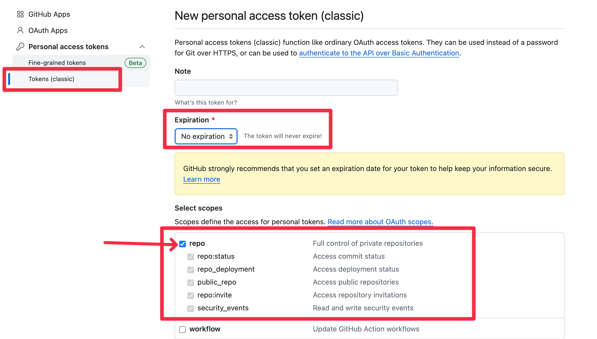
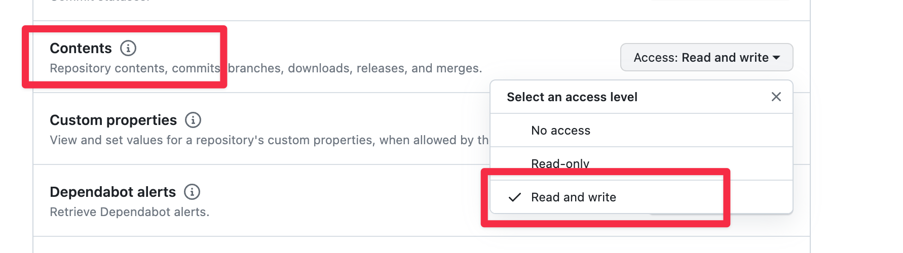

Github Configuration
Obtain Github Personal Token
Go to the Github Personal access token page, fill in the description and set the expiration time to never expire. Select the repository permission scope: repo

Tip
Why use Tokens (classic) instead of Fine-grained tokens?
There are several reasons, if you don't mind, you can choose Fine-grained tokens:
- Fine-grained tokens can only be valid for up to one year, which means you need to re-set the Notion Flow every year.
- Fine-grained tokens are in beta and may be unstable.
Admittedly, Fine-grained tokens provide more precise control over permissions, allowing Notion Flow to access only a specific repository, making it more secure. If you choose to use Fine-grained tokens, you will need to authorize your blog repository and then select Contents read and write permissions.

It all depends on you.Next, we will address the issue of uploading images, which requires the use of an OSS service.